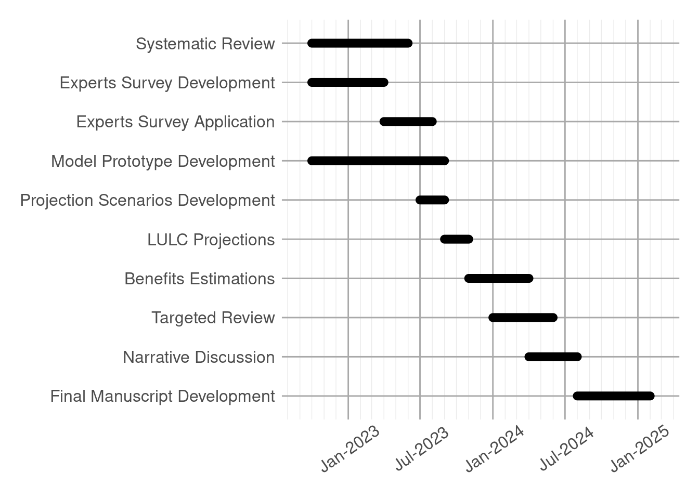

Integrated farming and global warming mitigation in Brazil
Abstract
There is a high expectation in the reduction of liquid greenhouse gases in Brazil by the implementation of integrated crop-livestock-forestry systems. The foundation of such expectation relies in the hypothesis that these systems are capable of storing more above and below ground carbon, in relation to conventional farming systems, due to the presence of trees. However, that are not robust estimates about the potential of these systems to store carbon in a national scale, and usually point estimates are used to extrapolate carbon sequestration. In order to improve the representation of carbon sequestration by integrated crop-livestock-forestry systems, this project aims to use published data to develop a spatially explicit model to estimate carbon fluxes in Brazil.
Introduction
The implementation of integrated crop-livestock-forestry (ICLF) systems in Brazil are expected to sequester enough carbon to contribute to reduce annual liquid carbon emissions. Despite the expectations, there are not clear estimates of the magnitude of reductions of liquid emissions caused by ICLF expansion. Field studies show contrasting results. Valani et al. (2022) observed a higher organic carbon content in the soil in relation to conventional grazing and other integrated systems. Bieluczyk et al. (2020) field measurements did not show clear differences between extensive grazing and ICLF soil organic matter, with highly temporal heterogeneity in observations. Silva et al. (2018) found inconsistent differences of soil total organic carbon between pasture and ILPF system due to high heterogeneity of observations along the soil layers, and observed small differences between agriculture and integrated system, in which the agriculture presented higher carbon stocks. Oliveira et al. (2018) found higher amounts of soil organic carbon of two ICLF systems and continuous pasture areas, there were also observed differences between the two integrated systems.
Unfortunately, estimates of carbon sequestration by ICLF at larger scales usually use point estimates, which can severely bias the results towards one direction. Azevedo et al. (2018) used a CO2-eq removal factor of -6.24 t CO2-eq ha-1 y-1, which was extracted from one experiment comparing integrated crop-livestock (ICL) systems to pasture (Carvalho et al. 2010), and did not observe consistent differences between these types of systems. The removal factor was then extrapolated over estimated ILPF area, this simplification is the best guess that Brazil have over the potential of integrated systems in reducing liquid emissions. In face of such scenario, this study aims to generate estimations of CO2-eq removal accounting for variation in many aspects, soil attributes, ICLF system characteristics, species used, spacing and climate. We expect that such estimations will provide more realistic ranges of possible outcomes in a diverse set of future scenarios of ICLF expansion in Brazil.
Objectives
The present work is composed by three main objectives, accompanied by parallel related questions:
Identify ICLF systems characteristics and dynamics in Brazil;
1.1. What are the management characteristics of ICLF systems?
1.2. What are the compositions of each component of ICLF systems?
1.3. What is the productivity of each component of ICLF systems?
1.4. What are the effects of ICLF system over soil properties?
1.5. What is the economical revenue of ICLF systems?
1.6. What is the potential expansion of ICLF systems in Brazil?
Estimate the potential of ICLF systems to provide benefits, in the context of climate change;
2.1. What are the ICLF system management characteristics that provide the best balance between carbon removal, productivity and financial revenue?
2.2. What are the main factors that influence the carbon removal in the modelling framework?
2.3. What is the pottential of the expansion of ICLF systems over the emissions reduction pledges made by Brazil?
Evaluate the implementation of ICLF as a mean to curb and mitigate climate change, in relation to different perspectives of solutions to avoid climatic catastrophe;
3.1. Does the expansion of ICLF systems taking into account equity and possible social impacts, as a public policy?
3.2. The actual strategies to promote the adoption of ICLF systems are being effective?
3.3. Does focusing on lowering net emissions a distraction from lowering gross emissions?
Materials and Methods
In order to achieve the proposed objective, the work will be divided in three major parts:
Overview of ICLF characteristics in Brazil;
Future projections and estimates of benefits generated by ICLF systems adoption;
Critical analysis of ICLF as a public policy to curb climate change;
Integrated crop-livestock-forest overview
The overview of ICLF systems in Brazil will be performed by analyzing published research and web surveys with experts.
Literature review
The literature review will be performed over published research from two sources, Scopus and Embrapa. It will have a very general approach, in which any research analyzing any aspect of ICLF will be screened. The strings that will be used to search research are the following:
Scopus: TITLE-ABS-KEY(iclf OR iclfs OR crop-livestock-forestry OR crop-livestock-forest OR agrosilvipastoral OR ilpf OR lavoura-pecuária-floresta OR agrosilvipastoril) AND PUBYEAR > 1999
Embrapa: ((ICLF) OR (iclfs) OR (crop-livestock-forestry) OR (crop-livestock-forest) OR (agrosilvipastoral) OR (ilpf) OR (lavoura-pecuária-floresta) OR (agrosilvipastoril)) AND (ano-publicacao:[2000 TO *]) AND (tipo-material-sigla:“PC” OR tipo-material-sigla:“AP” OR tipo-material-sigla:“NC” OR tipo-material-sigla:“RT”) AND (idioma:“Inglês” OR idioma:“Português”)
The data and information extract from selected research will be diverse, and will be organized in 11 relational tables. The tables will cover general information about the research document and characteristics of the experiment, as also data about the system management, soil properties, productivity, growth, emissions, and radiation. All tables will be described by metadata files.
An important assumption of the review is that the ICLF experiments are representative of the ICLF being implemented by farmers in Brazil.
Experts survey
The experts survey will be performed by a web application where the participants will be able to interact with a questionnaire to provide information about ICLF systems.
The nature of the survey is semi-structured, with closed and open questions. The participants will have the option to avoid answering any question.
The participants desired profile is of researchers or technicians with any experience with ICLF systems. A minimum of 50 participants is expected.
The objective of the survey is to gather information that are not available in the literature, as also to provide expected scenarios to the ICLF expansion in the future.
All answers will be stored in tables for posterior analysis. Each question will be represented by a column, and each participant will be represented as a row (one observation for each question).
The web application will be deployed in a personal website, where the participants will receive the link of the survey, along with a token that will be used to submit the answers.
Model projections
Model projections will estimate emissions and removals of Greenhouse Gases (GHG), food and fiber productivity and income of ICLF systems. The projections will be performed by a mixed modelling framework, using random processes, empirical and mechanistic models, deterministic and probabilistic factors to estimate the variables of interest.
The projections will cover the whole Brazilian territory, from 2020 to 2100. Estimations will be made over a grid formed by 3x3 kilometers cells.
The model will assume that ICLF will only occupy areas considered as degraded pasture according to the classification performed by MapBiomas (Souza et al. 2020). Another assumption is that after a transition from degraded pasture to ICLF, it will never change to another use.
Projections scenarios
To conduct the projections, a set of possible scenarios will be created. The scenarios will be based on data and information gathered from the systematic review and the experts survey.
The ICLF expansion scenarios will be based on the expectations of experts, and will provide data to create three scenarios. One will be the median of the expected area to be occupied by ICLF in 2030, 2050 and 2100, the other two will be the upper and lower quartiles. These three scenarios will be considered as reasonable future projections. There are going to be other two extreme scenarios, one where there wont be any expansion of ICLF, and another where the ICLF will cover all the degraded pasture extent by 2100.
The ICLF management scenarios will be based on the systematic review and experts survey. The management scenarios will dictate the characteristics of the ICLF systems being implemented in the future, as the species, population, spacing, inputs, and cycle length. The management scenarios will depend on the region where the ICLF system is being implemented.
Land use projections
The land use projections will be performed by randomly assigning grid cells occupied by degraded pastures to be converted to ICLF. The assigned grid cell will first be occupied by a transition state, which will be a Integrated Crop Livestock (ICL) system, and after a certain period, it will finally change to a ICLF. The assigned cells will also be attributed with management characteristics from the management scenarios explained in the section above.
The rate of ICLF expansion from year to year will be closely linear, and will be dictated by the ICLF expansion scenario.
The ICLF expansion process will be repeated 100 times for each ICLF expansion scenario, providing a range of outcomes in the final results.
Benefits estimations
Three types of benefits will be estimated: carbon sequestration, food and fiber production, and economic revenue.
Carbon sequestration will account for above and below ground.
The above ground carbon will be calculated by estimates of tree growth and litter accumulation, and will be based on empirical models (ordinary least squares linear regression). The above ground carbon accumulation will be dependent on climatic variables, the species used in the ICLF system, and the population of each component of the integrated system.
The below ground carbon will be calculated using a modelling framework proposed by Sierra, Müller, and Trumbore (2012). It is a flexible framework based on a general model of soil organic matter decomposition (Sierra, Müller, and Trumbore 2012). An implementation of the Century model (Parton et al. 1987) will be used to simulate organic matter decomposition along time. The soil carbon accumulation will be calculated by the amount of biomass input from the ICLF components over time. The decomposition will be affected by precipitation, temperature, potential evapotranspiration and soil texture.
Critical analysis
Results
Discussion
Conclusions
Schedule

Supporting Information
References
Azevedo, Tasso Rezende de, Ciniro Costa Junior, Amintas Brandão Junior, Marcelo dos Santos Cremer, Marina Piatto, David Shiling Tsai, Paulo Barreto, et al. 2018. “SEEG Initiative Estimates of Brazilian Greenhouse Gas Emissions from 1970 to 2015.” Scientific Data 5 (1). https://doi.org/10.1038/sdata.2018.45.
Bieluczyk, W., M. D. C. Piccolo, M. G. Pereira, M. T. D. Moraes, A. Soltangheisi, A. C. D. C. Bernardi, J. R. M. Pezzopane, et al. 2020. “Integrated Farming Systems Influence Soil Organic Matter Dynamics in Southeastern Brazil.” Geoderma 371. https://doi.org/10.1016/j.geoderma.2020.114368.
Carvalho, Joãoo Luís Nunes, Guilherme Siva Raucci, Carlos Eduardo P. Cerri, Martial Bernoux, Brigitte Josefine Feigl, Flávio Jesus Wruck, and Carlos Clemente Cerri. 2010. “Impact of Pasture, Agriculture and Crop-Livestock Systems on Soil c Stocks in Brazil.” Soil and Tillage Research 110 (1): 175–86. https://doi.org/10.1016/j.still.2010.07.011.
Oliveira, J. M., B. E. Madari, M. T. M. Carvalho, P. C. R. Assis, A. L. R. Silveira, M. de Leles Lima, F. J. Wruck, J. C. Medeiros, and P. L. O. A. Machado. 2018. “Integrated Farming Systems for Improving Soil Carbon Balance in the Southern Amazon of Brazil.” Regional Environmental Change 18 (1): 105–16. https://doi.org/10.1007/s10113-017-1146-0.
Parton, W. J., D. S. Schimel, C. V. Cole, and D. S. Ojima. 1987. “Analysis of Factors Controlling Soil Organic Matter Levels in Great Plains Grasslands.” Soil Science Society of America Journal 51 (5): 1173–79. https://doi.org/10.2136/sssaj1987.03615995005100050015x.
Sierra, C. A., M. Müller, and S. E. Trumbore. 2012. “Models of Soil Organic Matter Decomposition: The SoilR Package, Version 1.0.” Geoscientific Model Development 5 (4): 1045–60. https://doi.org/10.5194/gmd-5-1045-2012.
Silva, J. C. N., A. R. Silva, C. A. C. Veloso, E. F. Dantas, and J. A. A. S. Do Sacramento. 2018. “Aggregation, Carbon, and Total Soil Nitrogen in Crop-Livestock-Forest Integration in the Eastern Amazon [Agregação, Carbono e Nitrogênio Total Do Solo Em Integração Lavoura-Pecuária-Floresta Na Amazônia Oriental].” Revista Brasileira de Engenharia Agricola e Ambiental 22 (12): 837–42. https://doi.org/10.1590/1807-1929/agriambi.v22n12p837-842.
Souza, Carlos M., Julia Z. Shimbo, Marcos R. Rosa, Leandro L. Parente, Ane A. Alencar, Bernardo F. T. Rudorff, Heinrich Hasenack, et al. 2020. “Reconstructing Three Decades of Land Use and Land Cover Changes in Brazilian Biomes with Landsat Archive and Earth Engine.” Remote Sensing 12 (17): 2735. https://doi.org/10.3390/rs12172735.
Valani, G. P., A. F. Martíni, J. R. M. Pezzopane, A. C. D. C. Bernardi, and M. Cooper. 2022. “Soil Physical Quality in the Topsoil of Integrated and Non-Integrated Grazing Systems in a Brazilian Ferralsol.” Soil and Tillage Research 220. https://doi.org/10.1016/j.still.2022.105357.
Reuse
CC BY-NC-ND 4.0